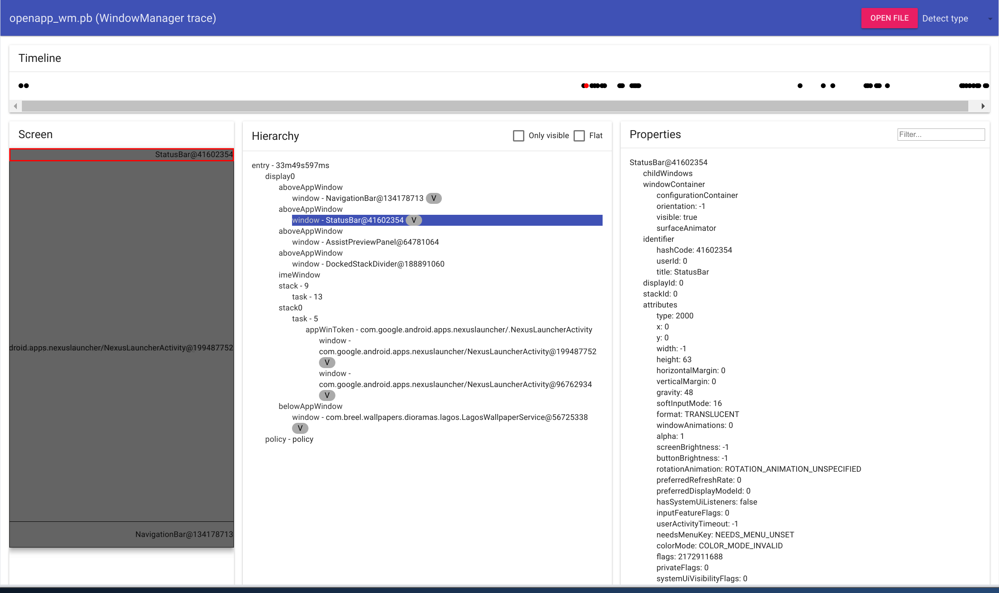

WinScope provides the infrastructure and tools to record and analyze WindowManager and SurfaceFlinger states during and after window transitions. WinScope records all pertinent system service states to a trace file, which you can use to replay and step through the transitions.
Capture traces through Quick Settings or
adb on devices running userdebug or eng builds.
To capture traces from Quick Settings:
Traces are written to /data/misc/wmtrace/wm_trace.pb and
/data/misc/wmtrace/layers_trace.pb. Traces are also included in
bug reports.
adbWhen capturing traces through adb, capture
WindowManager and SurfaceFlinger traces separately.
To capture WindowManager traces:
adb shell cmd window tracing start
adb shell cmd window tracing stop
adb pull /data/misc/wmtrace/wm_trace.pb wm_trace.pb
You can optionally change the default log configuration of various settings for WindowManager traces:
adb shell cmd window tracing [frame | transaction]
adb shell cmd window tracing level [all | trim | critical]
adb shell cmd window tracing size size-value
adb shell cmd window tracing status
To capture SurfaceFlinger traces:
adb shell su root service call SurfaceFlinger 1025 i32 1
adb shell su root service call SurfaceFlinger 1025 i32 0
adb pull /data/misc/wmtrace/layers_trace.pb layers_trace.pb
You can optionally change the default log configuration of various settings for SurfaceFlinger traces:
adb shell su root service call SurfaceFlinger 1029 i32 size-value
adb shell su root service call SurfaceFlinger 1033 i32 flags
WinScope reads a snapshot of WindowManager and SurfaceFlinger states
from bug reports. The bug reports store the states as separate proto files
inside the proto folder. To generate the state dumps using
adb, run the following commands.
WindowManager
adb exec-out dumpsys window --proto > window_dump.pb
SurfaceFlinger
adb exec-out dumpsys SurfaceFlinger --proto > sf_dump.pb
To analyze a trace file, use the WinScope web app. Build the app can from the source or open it from the prebuilt directory.
curl 'https://android.googlesource.com/platform/prebuilts/misc/+/master/common/winscope/winscope.html?format=TEXT' | base64 -d > winscope.html
After opening a trace file in WinScope, you can analyze the trace in several ways.
V icon.